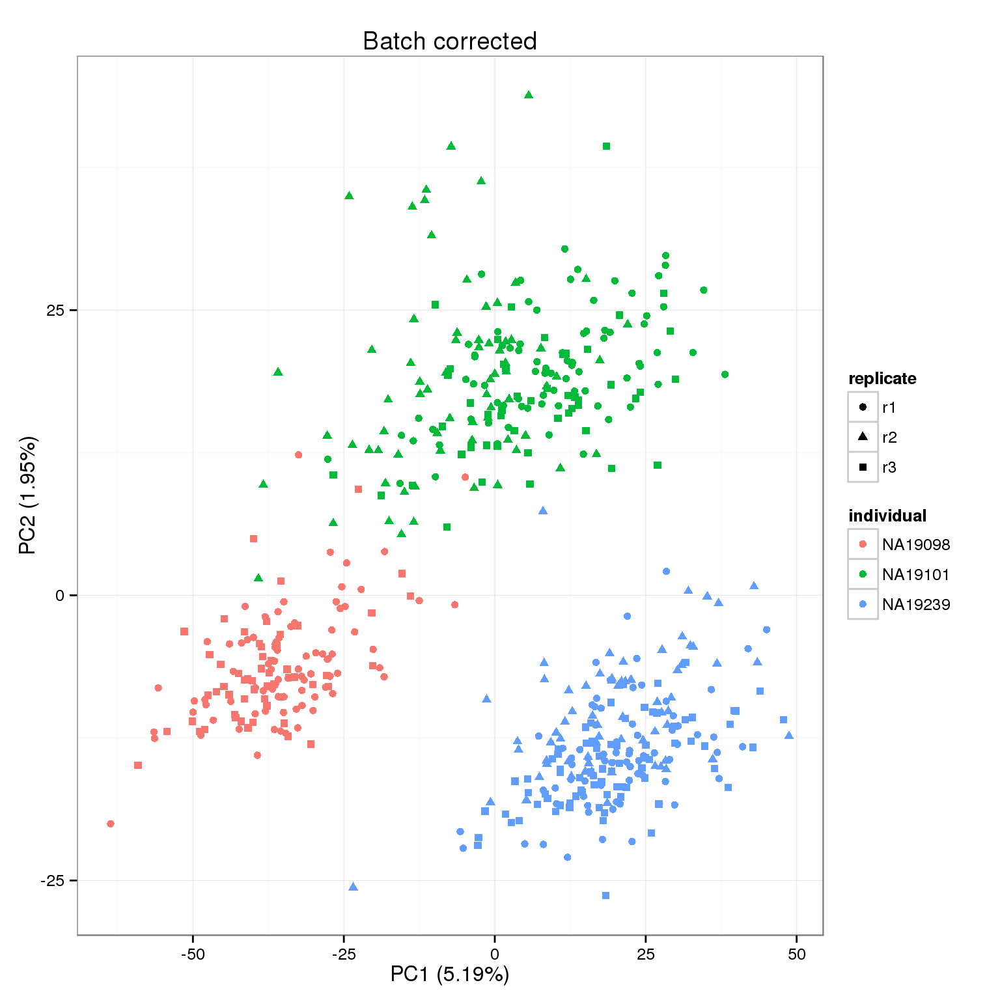

Last updated: 2016-01-26
Code version: a6478d5228e9af6afb1f1b70e4ef8e1730a6d9ba
library("limma")
library("edgeR")
library("ggplot2")
theme_set(theme_bw(base_size = 12))
source("functions.R")
library("Humanzee")This file uses a mixed effects model to remove technical batch effects. The modeling function is adapted from the package limma and is implemented in the package Humanzee.
Creates the following file:
molecules-final.txt - Molecules in high quality single cells after removing unwanted variation with mixed model
Input filtered annotation.
anno_filter <- read.table("../data/annotation-filter.txt", header = TRUE,
stringsAsFactors = FALSE)
head(anno_filter) individual replicate well batch sample_id
1 NA19098 r1 A01 NA19098.r1 NA19098.r1.A01
2 NA19098 r1 A02 NA19098.r1 NA19098.r1.A02
3 NA19098 r1 A04 NA19098.r1 NA19098.r1.A04
4 NA19098 r1 A05 NA19098.r1 NA19098.r1.A05
5 NA19098 r1 A06 NA19098.r1 NA19098.r1.A06
6 NA19098 r1 A07 NA19098.r1 NA19098.r1.A07Input Poisson GLM transformed molecule counts per million.
molecules_cpm_trans <- read.table("../data/molecules-cpm-trans.txt", header = TRUE,
stringsAsFactors = FALSE)
stopifnot(ncol(molecules_cpm_trans) == nrow(anno_filter),
colnames(molecules_cpm_trans) == anno_filter$sample_id)Because the Poisson transformation with the ERCC controls was not sufficient to remove all the unwanted technical variation, we used a mixed model to correct for batch effects.
We adapted limma’s algorithm for estimating variance components due to random effects. This analysis operates under the assumption that biological replicates (or batches within an individual in this case) share similar correlation across genes. Morever, the analysis permits negative correlation between replicates.
For every single gene, we will fit a mixed model assuming differences between batches are not individual-specific as follows
\[ y_{ijk} = \mu + \alpha_i + b_j + \epsilon_{ijk} \],
where \(y_{ijk}\) is the log2 counts-per-million (cpm) for any gene in individual \(i\), batch \(j\), and cell \(k\), \(\mu\) is the gene-specific expression level across all cells, \(\alpha_i\) is the expression level specific to individual \(i\), \(b_j\) is batch \(j\)‘s deviation of expression level from gene-specific expression levels, and \(\epsilon_{ijk}\) is the models’ residual error.
We assume that \(b_j\) follows a normal distribution with \(b_j \sim N(0, \sigma^2_b)\) for \(j = 1, \dots, 9\), and \(\epsilon_{ijk} \sim N(0, \sigma^2_\epsilon)\) for \(i = 1, 2, 3; j = 1, \dots, 9; and k = 1, \dots, n_{ij}\), where \(n_ij\) denotes the number of cells in individual \(i\), batch \(j\).
Create design matrix and compute a consensus correlation coefficient using limma’s duplicateCorrelation function.
block <- anno_filter$batch
design <- model.matrix(~ 1 + individual, data = anno_filter)dup_corrs <- duplicateCorrelation(molecules_cpm_trans, design = design,
block = block)Fit a mixed model with the 9 batches being the random effect.
gls_fit <- Humanzee::ruv_mixed_model(molecules_cpm_trans,
ndups = 1,
design = design,
block = block,
correlation = dup_corrs$cons)Compute expression levels after removing variation due to random effects.
molecules_final <- t( design %*% t(gls_fit$coef) ) + gls_fit$residOutput the cleaned data.
colnames(molecules_final) <- colnames(molecules_cpm_trans)
write.table(round(molecules_final, digits = 6), "../data/molecules-final.txt", quote = FALSE,
sep = "\t", col.names = NA)pca_final <- run_pca(molecules_final)
pca_final_plot <- plot_pca(pca_final$PCs, explained = pca_final$explained,
metadata = anno_filter, color = "individual",
shape = "replicate") +
labs(title = "Batch corrected")
pca_final_plot
sessionInfo()R version 3.2.0 (2015-04-16)
Platform: x86_64-unknown-linux-gnu (64-bit)
locale:
[1] LC_CTYPE=en_US.UTF-8 LC_NUMERIC=C
[3] LC_TIME=en_US.UTF-8 LC_COLLATE=en_US.UTF-8
[5] LC_MONETARY=en_US.UTF-8 LC_MESSAGES=en_US.UTF-8
[7] LC_PAPER=en_US.UTF-8 LC_NAME=C
[9] LC_ADDRESS=C LC_TELEPHONE=C
[11] LC_MEASUREMENT=en_US.UTF-8 LC_IDENTIFICATION=C
attached base packages:
[1] stats graphics grDevices utils datasets methods base
other attached packages:
[1] testit_0.4 Humanzee_0.1.0 ggplot2_1.0.1 edgeR_3.10.2
[5] limma_3.24.9 knitr_1.10.5
loaded via a namespace (and not attached):
[1] Rcpp_0.12.0 magrittr_1.5 MASS_7.3-40 munsell_0.4.2
[5] colorspace_1.2-6 stringr_1.0.0 httr_0.6.1 plyr_1.8.3
[9] tools_3.2.0 grid_3.2.0 gtable_0.1.2 htmltools_0.2.6
[13] yaml_2.1.13 digest_0.6.8 reshape2_1.4.1 formatR_1.2
[17] bitops_1.0-6 RCurl_1.95-4.6 evaluate_0.7 rmarkdown_0.6.1
[21] labeling_0.3 stringi_0.4-1 scales_0.2.4 proto_0.3-10